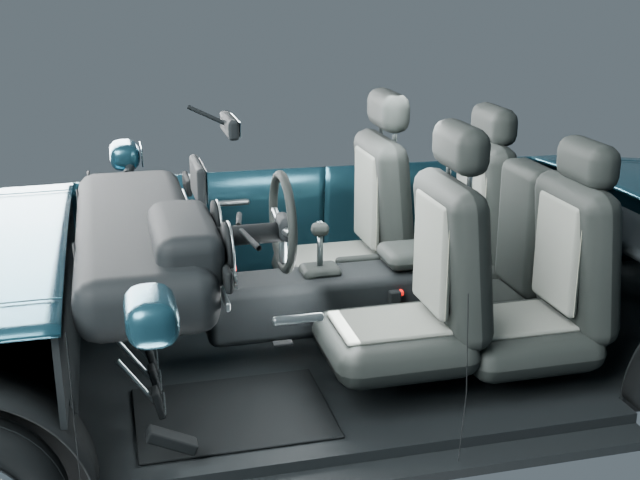
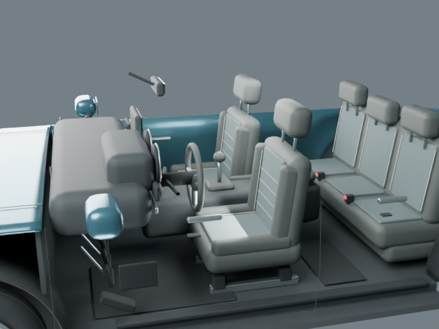
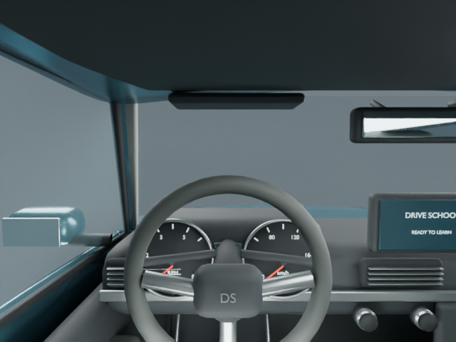
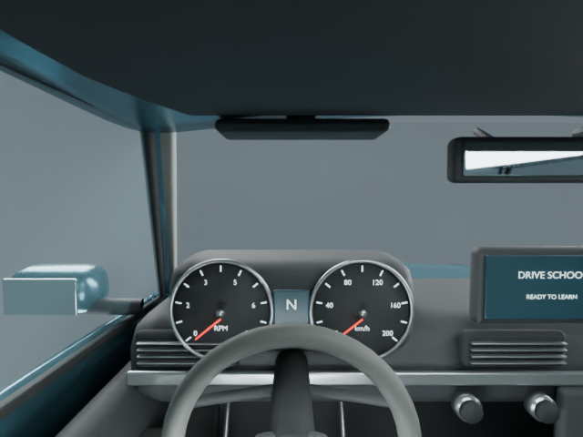
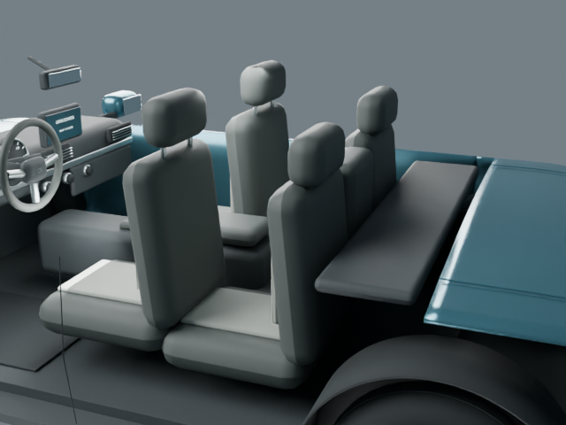
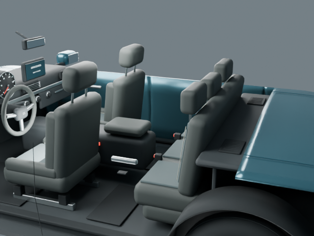
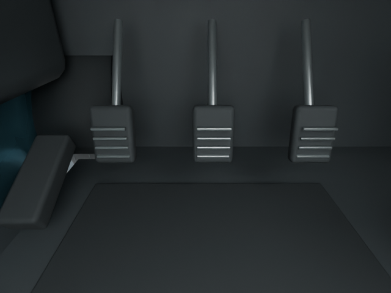
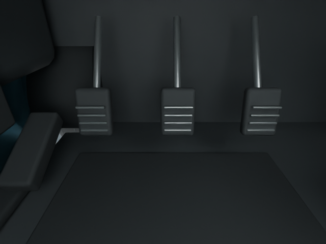
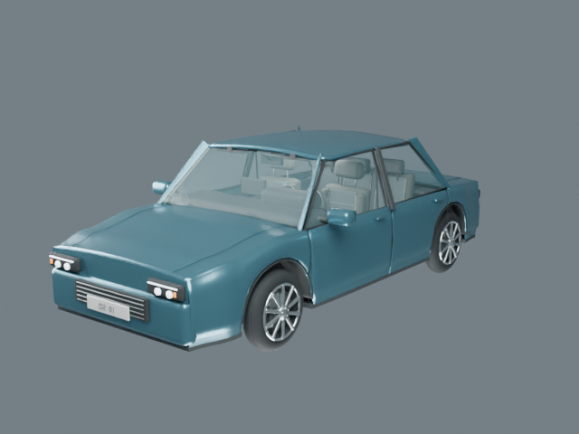
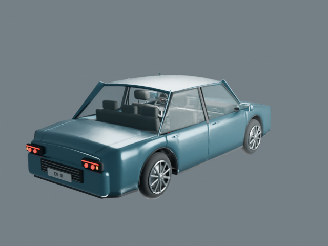

До

Visual QA Demo
Передние кресла с салазками и боковой поддержкой, полноценный задний диван с тремя подголовниками, пространство для ног и отделка дверей. Руль опущен, приборы открыты для обзора. Исходный закрытый кузов сохранён.
До

После

До · Blender

После · Blender

До · Blender

После · Blender

До · Blender

После · Blender



Открыть автомобиль в 3D → · Скачать GLB
FBX и GLB повторно импортированы: 114,896 треугольников в каждом формате. Имена привязок сохранены.
Все три педали проверены на зазор до пола в 11 положениях (0–20°). Минимальный зазор — 79 мм. Это проверка до пола, не полный анализ пересечений механизма.
Ревизия: cabin_v3 · SHA-256 исходника: fb10a066c124e6a3baf937b61481e4116a5150255cd55f153159ed929cb70f93